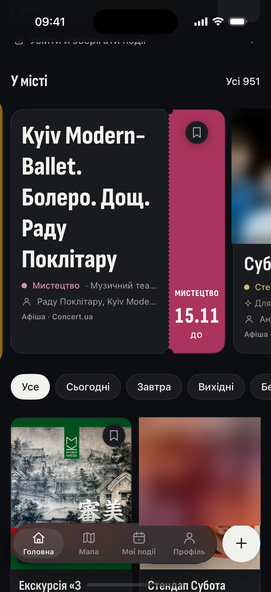
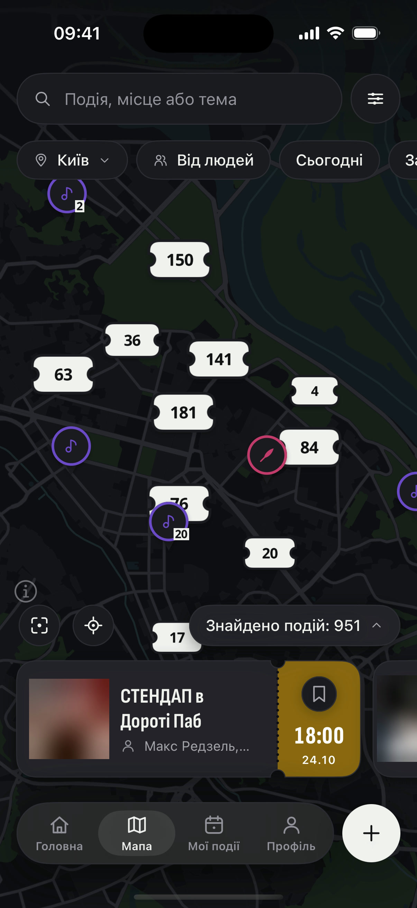

твій тиждень на чеку:
відірви вечір від тижня.
БУДНІ
чек № 42 · каса «якось потім»
ПНробота9:00–19:00
ПНпральня21:00
ПН«ще одна серія»01:30
ВТробота9:00–19:30
ВТдзвінок «на 5 хв»1 год
ВТпосуд22:00
СРробота9:00–20:00
СРдедлайн23:59
ЧТробота9:00–19:00
ЧТдоставка21:30
ЧТспати23:00
ВЕЧОРІВ ДЛЯ СЕБЕ0
МУЗИКА
СТЕНДАП
ІГРИ
МИСТЕЦТВО
ПТ 19:00


сотні подій у місті —квитками
і всі — на мапітвого міста
Поряд
Є куди. Буде з ким.
ПТзнову нікуди?
що відірвеш цього тижня? 👇
безкоштовно
Apple, логотип Apple і App Store є торговельними марками Apple Inc.
Google Play і логотип Google Play є торговельними марками Google LLC.